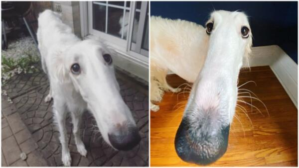
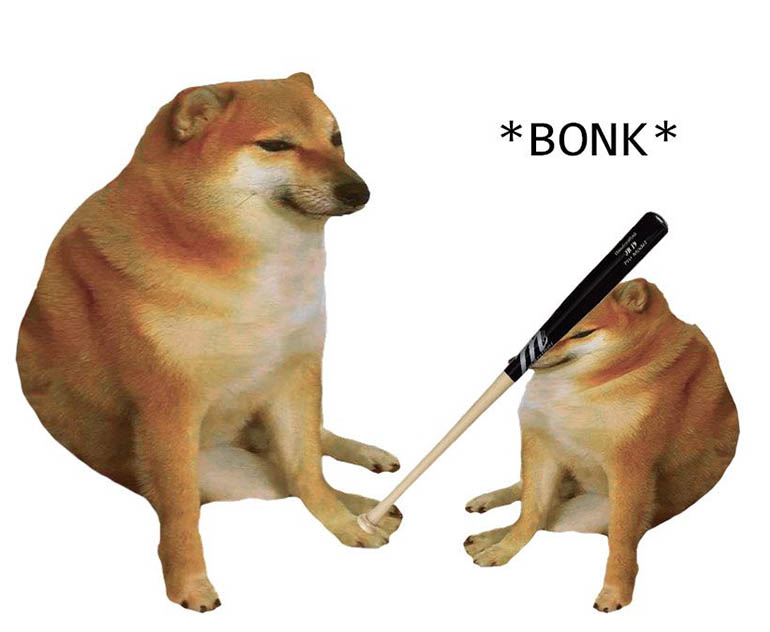
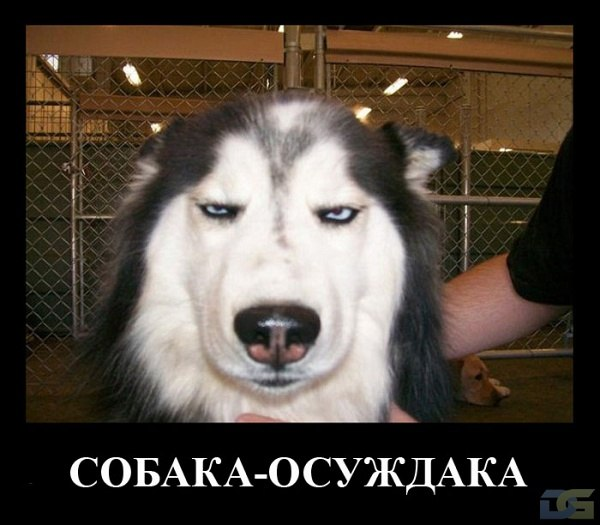

Количество известных и общепризнанных пород в мире — около 400. Породы отличаются по типу и размерам: существуют как совсем крохотные собачки весом менее 500 г, так и гигантские особи весом свыше 100 кг. Численность пород постепенно растет, появляются новые разновидности, непохожие на остальных.
Английский клуб собаководства (Кеннел-клуб) определяет 7 групп собак:
  
Формула серотонина (нейромедиатора, который выделяется у людей при взаимодействии с собаками):
C10H12N2O